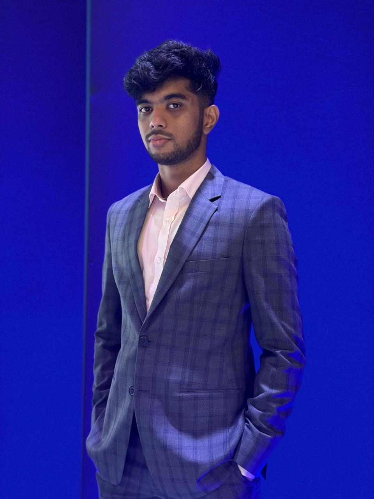
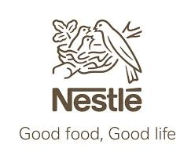

Marketing · Strategy · Analytics
Marketing graduate building at the intersection of brand strategy, data-driven insight, and leadership — with global ambition and FMCG experience at Nestlé Bangladesh.

About Me
I am a marketing graduate from Bangladesh University of Professionals with hands-on experience across FMCG brand management, startup ecosystem communication, and consumer insight research.
At Nestlé, I supported the MAGGI brand team on campaign execution, packaging development, and data-driven performance tracking. At Startup Bangladesh, I contributed to ecosystem-level communications and helped compile the 2023 Annual Report. At Remark HB, I developed consumer loyalty frameworks and executed market analysis.
Beyond work, I led the BUP Finance Society as President — directing a national competition with a 90+ member team, launching a climate finance magazine, and executing multiple campus-wide programs.
Most recently, I completed the Introduction to Applied Business Analytics certificate from the University of Illinois Urbana-Champaign (Coursera), strengthening my foundation in data-driven decision making. I am now preparing for a dual master’s program at Macquarie University, Australia, combining Commerce and Marketing to deepen my strategic capabilities on a global stage.
Professional Experience
Three internships across FMCG, startup ecosystem, and brand consulting — each building a different dimension of marketing expertise.

Leadership & Extracurriculars
As President of the BUP Finance Society, I led national events, managed large teams, and launched multiple initiatives bridging academia, industry, and sustainability.
Led the society as President — overseeing all major events, team management, external relations, and strategic direction. Managed a 90+ member organizing committee for Capitalizer. Secured corporate sponsorships through strategic outreach. Directed cross-functional teams across marketing, logistics, operations, and creative.
Led conceptualization and execution of BUP’s flagship national competition — multi-round investment strategy challenges with industry judges and corporate partners.
Executed the society’s annual recruitment, onboarding 100+ new students through structured assessments and communication workflows.
Initiated and guided BUP’s first climate finance magazine — combining research, editorial coordination, and design direction.
Organized a practical Excel skills training program focused on dashboards, data modeling, and business reporting.
Selected Highlights
End-to-end campaign from creative briefing and agency coordination to on-ground activation. Also supported pre-launch and launch of MAGGI Fried Chicken Noodles.
Built Excel trackers and dashboards monitoring campaign performance, sales trends, and KPIs. Analyzed share data across key regions for strategic insights.
Coordinated data from 50+ startup CEOs for the 2023 Annual Report. Drafted press releases for funding announcements.
Developed “Loyalty Program Essentials” guide. Conducted consumer insight research and market analysis for data-driven planning.
How I Think
How I approach problems, make decisions, and build strategy — the cognitive operating system behind my work.
Interactive Skills Lab
Click any skill category, then explore individual skills to see real examples, tools, and impact.
Strategic Insights
Perspectives on marketing strategy, business analytics, and the future of data-driven brand building.
The era of intuition-only marketing is ending. From consumer journey mapping to real-time campaign optimization, data is reshaping how brands make strategic decisions. This article explores the frameworks and mindsets needed to thrive in a data-first marketing landscape.
Read ArticleUnderstanding how price sensitivity, cultural context, and aspirational consumption shape brand strategies in developing economies.
Read moreA practical guide to building marketing dashboards that connect campaign performance to business outcomes.
Read moreWhy Excel remains one of the most powerful tools for structured thinking, quick analysis, and stakeholder communication.
Read moreMoving from gut-feel marketing to evidence-based strategy — practical steps for early-career professionals.
Read moreThe strategic reasoning behind combining Commerce and Marketing degrees for an international marketing career.
Read moreHow digital channels are reshaping brand equity and what traditional brand builders need to learn.
Read moreSkills & Tools
Academic Journey
Four-year undergraduate focused on marketing strategy, business analytics, and management. Strong practical exposure through internships, case competitions, and extracurricular leadership.
Preparing for a dual master’s program in Sydney — combining deep marketing expertise with commerce and analytics for globally competitive brand strategy and consulting roles.
Training & Certifications
What Comes Next
My next chapter begins in Sydney, Australia — where I will pursue a dual Master of Commerce and Master of Marketing at Macquarie University. This decision reflects a deliberate strategy: to combine the quantitative rigor of commerce with the creative depth of marketing.
With my FMCG foundation at Nestlé, leadership experience through BUP Finance Society, and growing analytics capabilities, I am building toward a career in international marketing strategy and brand consulting — where data meets storytelling.
Macquarie University, Sydney — commencing July 2026. Combining strategic marketing specialization with advanced business analytics and global commerce.
Get in Touch
Whether you are looking for a marketing professional, want to discuss strategy, or have a collaboration in mind — I would be happy to hear from you.